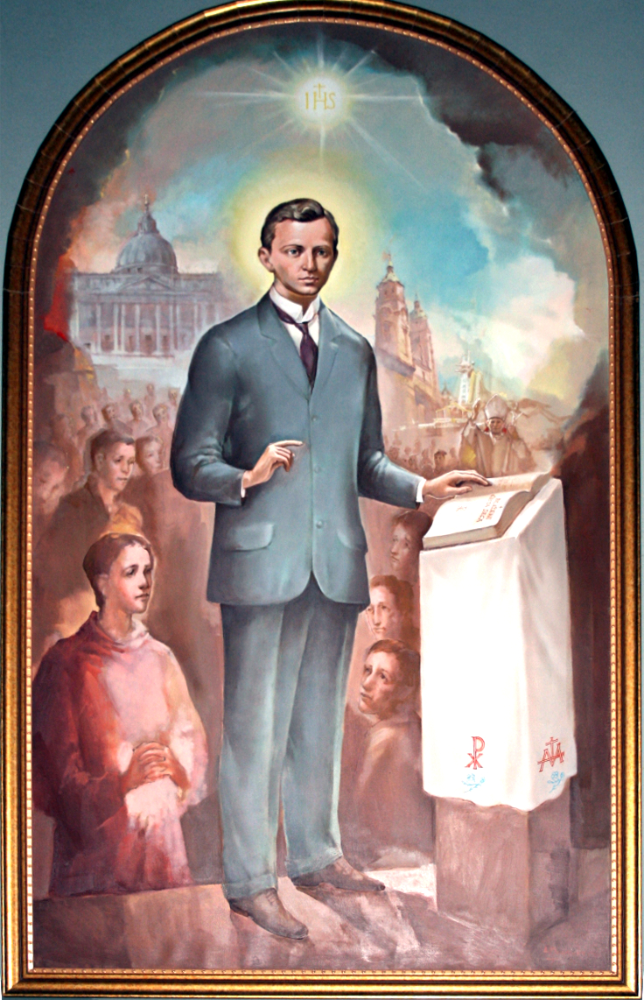

„Hoće li tko za mnom, neka se odreče samoga sebe, neka uzme svoj križ i neka ide za mnom.” (Mt 16,24)

Blaženi Ivan Merz rođen je 1896. godine u Banjoj Luci u liberalnoj obitelji, a njegov životni put oblikovali su vrhunsko obrazovanje u Beču i Parizu te potresno iskustvo Prvog svjetskog rata. Suočen sa stradanjima na talijanskom bojištu, doživio je duboko vjersko obraćenje, spoznavši da je katolička vjera njegovo jedino životno zvanje. Nakon rata dolazi u Zagreb, gdje doktorira na sveučilištu i postaje profesor na Nadbiskupskoj klasičnoj gimnaziji, živeći svetačkim životom prožetim svakodnevnom eukaristijom i molitvom.
Kao istaknuti intelektualac i vjernik laik, Merz je postao ključna figura liturgijske obnove i Katoličke akcije u Hrvatskoj. Svoju neizmjernu energiju posvetio je odgoju mladeži u Hrvatskom orlovskom savezu pod geslom "Žrtva – Euharistija – Apostolat", učeći ih ljubavi prema Crkvi i Kristovu namjesniku papi. Njegova vizija kršćanskog aktivizma i duhovnosti nadahnula je osnivanje prvih laičkih instituta u Hrvatskoj, čime je, unatoč tome što nije bio svećenik, zaslužio naziv "stupa Crkve".
Umro je na glasu svetosti u Zagrebu, 10. svibnja 1928. godine, u tek 32. godini života, prikazavši svoje trpljenje kao žrtvu za hrvatsku mladež. Njegov grob u bazilici Srca Isusova u Zagrebu postao je mjesto molitve i brojnih uslišanja, a njegov lik "Kristova orla" ostao je simbolom težnje prema duhovnim visinama. Papu Ivana Pavla II. toliko je dojmio njegov primjer da ga je 2003. godine u rodnoj Banjoj Luci proglasio blaženim, postavivši ga za trajni uzor mladima i vjernicima laicima.